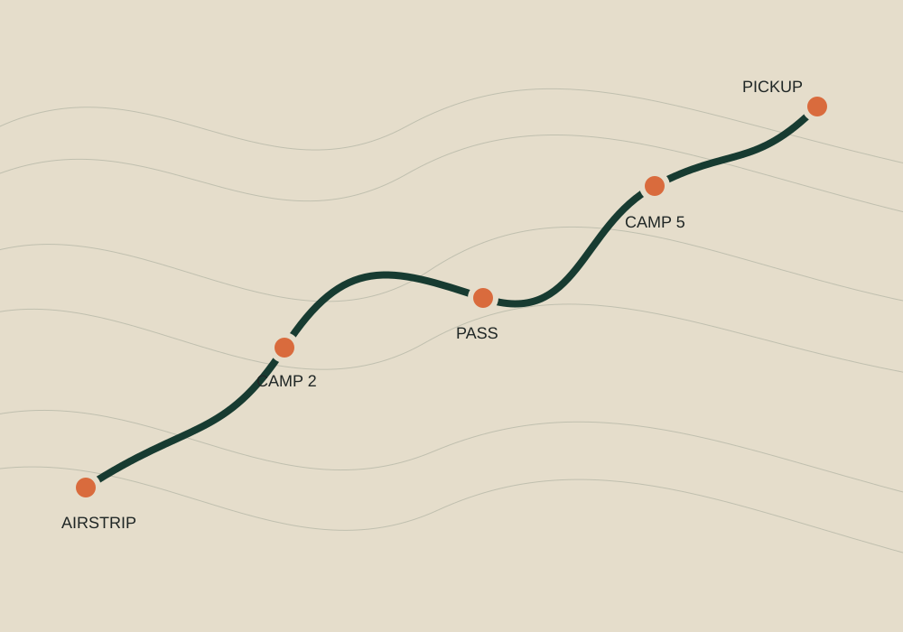

ROUTE 01 · FIELD LOGBrooks Range
Brooks Range
Traverse
Eight days on foot through tundra valleys and low passes, moving camp with weather and group condition.

ROUTE LOG
- DISTANCE
- ~54 km
- TRAVEL
- 6 walking days + arrival/exit
- PACK
- 12–16 kg at start
- SLEEP
- Remote tent camps
- COMMS
- Satellite
- COMFORT
- Low
The sequence is fixed. The line is not.
DAY 01Airstrip to first tundra camp
Gear split, travel check, short first movement, camp systems.
DAY 02–03Upper valley travel
Long tundra days; route choice follows drainage crossings and ground condition.
DAY 04Low pass
Highest exposure day. Wind and visibility determine timing and line.
DAY 05–06North drainage
Open country, wildlife spacing, moving camp toward pickup valley.
DAY 07Pickup position
Build weather margin into the final movement; camp near safe aircraft access.
DAY 08Exit window
Aircraft pickup when conditions allow. Schedule onward travel with margin.
WHAT MAKES THIS HARD
Not altitude. Accumulation.
GROUNDSoft tundra, tussocks, wet crossings
LOADMulti-day personal gear + shared food
WEATHERCold rain, wind, low cloud possible
RECOVERYTent sleep every night
“The Brooks doesn’t need steepness to make a day serious. Wet ground, a headwind, and six hours of careful footing add up.”Read the readiness manual